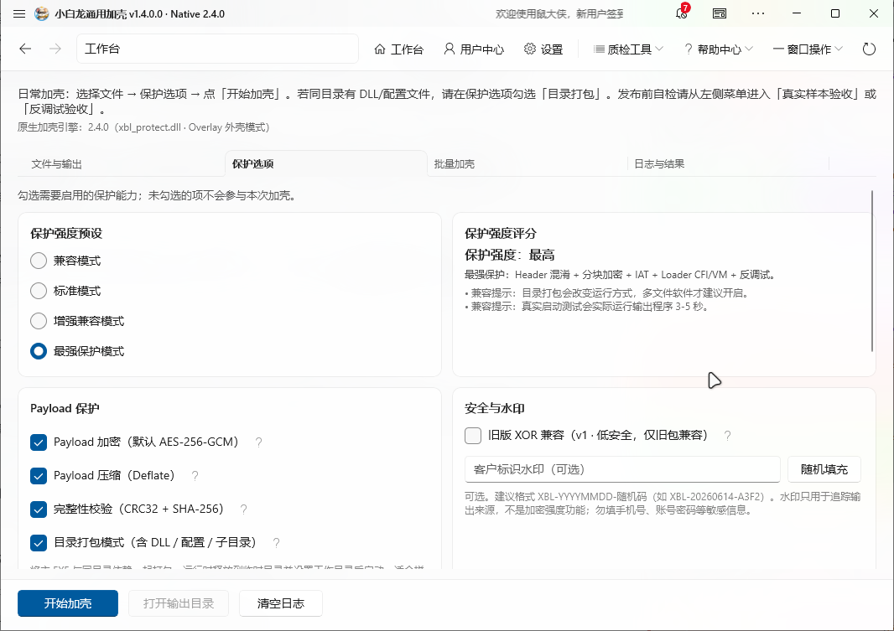
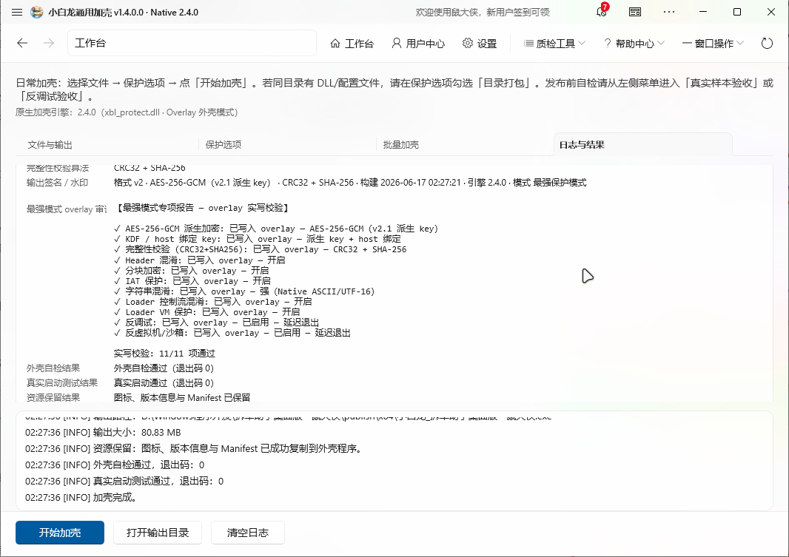

SECURITY TOOL
小白龙通用加壳 - v1.4.0.0
程序加壳 · 保护壳体 · 防逆向分析 · EXE安全加固工具
小白龙通用加壳工具是一款轻量级Windows程序保护工具，支持对EXE程序进行加壳保护， 防止反编译、破解与逆向分析，提高软件安全性与稳定性，适用于各类桌面软件发布场景。
适用场景：软件发布 / 商业软件保护 / EXE加密 / 防调试 / 防破解处理
功能特点
EXE加壳保护
防反编译
防调试
代码混淆
运行保护
SCREENSHOTS
软件界面截图
以下为小白龙通用加壳工具界面展示

